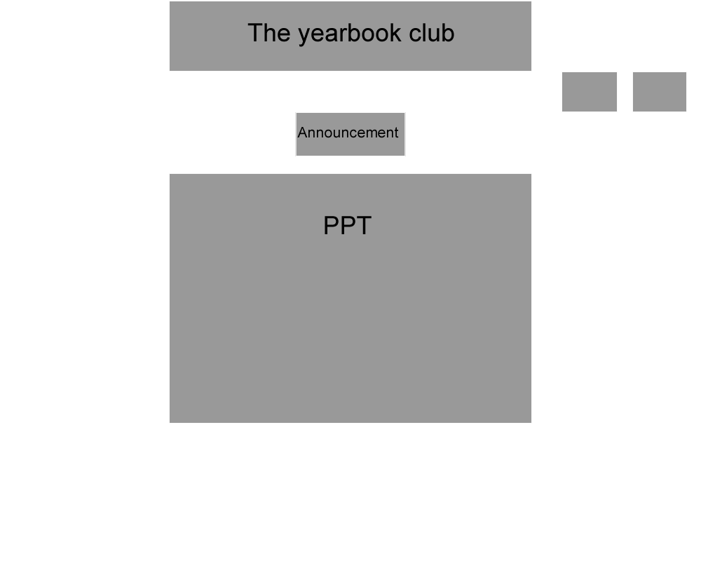

My favorite ideas out of the most is the note exchanging center, I feel like it will help students a lot. This provide a platform for students to make up there note or bad note taking skills.
Group Project #1
Out of all the ideas posted on moodle and our own ideas.
Final decision, Minji Math project idea
We decide to make a website for AIS students taking math class
Client: AIS math teachers
Audience: AIS students
Minji emailed Mr.Kang, contact with real client
After contacting with client, client decided that he only wants the website to focus on trigonometry.
Instead of creating a website for every math section, now we are only making a website for trig.
Mr. Chiu came and discussed with us, throw in some challenge quetions.
This webpage is to help peole with trigonometry.
Objectives and criteria
- Information from teachers
- Look interesting, colorful
- Font is easy to read, not too big or small
- Include a navigation bar on the side, a search bar
- New tabs will open when clicking
- Viewable online PDF reader
- FOR students that are struggling with chaper 14, trigonometry TO
understand and study by themselves by quizzes and quick tips.
- FOR Mr. Kang (real world client) TO teach his student and help them instead
of creating a moodle page separately.
- FOR people outside of the classroom TO learn and understand also to have
access about the trigonometry chapter information.
Group Project #2
- Information from teachers
- Look interesting, colorful
- Font is easy to read, not too big or small
- Include a navigation bar on the side, a search bar
- New tabs will open when clicking
- Viewable online PDF reader
- FOR students that are struggling with chaper 14, trigonometry TO understand and study by themselves by quizzes and quick tips.
- FOR Mr. Kang (real world client) TO teach his student and help them instead of creating a moodle page separately.
- FOR people outside of the classroom TO learn and understand also to have access about the trigonometry chapter information.
Group Project #2
We decide to change a project becuae there are too many problems and the project start to become very complicated and confusing.
Client: Mr. Leung
We tak to Mr. Leung directly and he would want us to develop a website for yearbook photography clubAudience: Photographer
The fecebook page for the yearbook, Mr. Leung feel it is not organize and the page is too long, you have to scroll down forever to find something.
Show good examples and bad ecamples of yearbook pictures
photography lessons, display some yearbook news feed, what is going on in the yearbook.
Deadline for the assignments.
Objectives and criteria
- Include a naviagtion bar on the side, a search bar.
- Include a timeline of some sort to siplay the deadline information.
- Look professional.
- Display news feed.
- FOR Mr.Leung (real life client) TO inform the deadline and his expectations for the phtos.
- FOR photographers in the yearbook club TO learn how to take good photos.
- Why would Mr. Kang need this webpage instead of uploading it on moodle?
- WHat is the purpose of this page?
- How can this help Mr.Kang?
- Why would Mr. Leung need a seperate website to display those information? Why don't he use moodle?

This website is for the yearbook club, they are the audience of this website. This website is designed for them to get easy access to the club information such as the deadline of certain projects, a guide for them to take pictures. Our client is Mr.Leung
To-do List

Flowcharts/storyboard
Ideas

Final flowchart

We pick this flowchart here because this one compared to the other ones we made is simpler and does not involve a lot of clicking or going through a lot of pages or coast some time. It is very stragiht forward that the client and what we want. To make this website clean and simple.

Problems
Evaluation
We came up with many differnt ideas, we finalized our descision. We are making a website for Mr. Kang to help him teach trig easier and peole can get access to the information easier and learn faster.
Mr. chiu have challenged us with differnt questions, and the exact purpose of this website. Why would Mr. Kang use this page instead of using moodle?
Many quesions and uncertainty we decide to change our topic. Mr. Leung have provided us with some idea. We especailly wanted to create a website for yearbook
pros and cons about FW, DW
Firework-easy and simple, it's very quick to slice up images and exporting them
Feedback
clean up, make the navigator 30% to 70%. The page now seem to unbalanced does not look good.
Changing the storyboard to a working prototype, use firework slice up everything you would want to include in the prototype. Then export the sliced images.